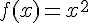
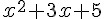
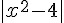

以爬山演算法尋找函數最高點
簡介
以下是「爬山演算法」 (Hill-Climbing Algorithm) 的一個簡易版本，其方法超簡單，就是一直看旁邊有沒有更好的解，如果有就移過去。然後反覆的作這樣的動作，直到旁邊的解都比現在的更差時，程式就停止，然後將那個位於山頂的解傳回，就完成了。
Algorithm HillClimbing(f, x)
x = 隨意設定一個解。
while (x 有鄰居 x' 比 x 更高)
x = x';
end
return x;
end當然、這種演算法只能找到「局部最佳解」(local optimal)，當整個空間有很多山頂的時候，這種方法會爬到其中一個山頂就停了，並不一定會爬到最高的山頂。
程式碼
檔案： HillClimbingSimple.js
var util = require("util");
var log = console.log;
function f(x) { return -1*(x*x+3*x+5); }
// function f(x) { return -1*Math.abs(x*x-4); }
var dx = 0.01;
function hillClimbing(f, x) {
while (true) {
log("f(%s)=%s", x.toFixed(4), f(x).toFixed(4));
if (f(x+dx) >= f(x))
x = x+dx;
else if (f(x-dx) >= f(x))
x = x-dx;
else
break;
}
}
hillClimbing(f, 0.0);執行結果
求解 :  的最高點，也就是  的最低點。
D:\Dropbox\Public\web\ai\code\optimize>node hillClimbingSimple
f(0.0000)=-5.0000
f(-0.0100)=-4.9701
f(-0.0200)=-4.9404
f(-0.0300)=-4.9109
f(-0.0400)=-4.8816
f(-0.0500)=-4.8525
...
f(-1.4500)=-2.7525
f(-1.4600)=-2.7516
f(-1.4700)=-2.7509
f(-1.4800)=-2.7504
f(-1.4900)=-2.7501
f(-1.5000)=-2.7500如果我們將上述程式的 f(x) 換成註解中的那個，也就是將 f(x) 換成如下版本：
function f(x) { return -1*Math.abs(x*x-4); }那麼就可以用來求解  的最低點，也就是尋找 4 的平方根，以下是執行結果：
D:\Dropbox\Public\web\ai\code\optimize>node hillClimbingSimple
f(0.0000)=-4.0000
f(0.0100)=-3.9999
f(0.0200)=-3.9996
f(0.0300)=-3.9991
f(0.0400)=-3.9984
f(0.0500)=-3.9975
...
f(1.9500)=-0.1975
f(1.9600)=-0.1584
f(1.9700)=-0.1191
f(1.9800)=-0.0796
f(1.9900)=-0.0399
f(2.0000)=-0.0000您可以看到上述程式正確的找到 4 的平方根是 2，而我們所用的方法與求解 的最高點幾乎是一模一樣的，只是把函數換掉而已。
結語
您可以看到上述用爬山演算法尋找函數最高點或最低點的程式，其實非常的簡單，只不過是看看兩邊是否有更好的解，如果有就移過去罷了。
但是、這麼簡單的演算法，其實威力是非常強大的，這種方法可以求解的問題非常的多，很多人工智慧上非常重要的問題，其實都只不過是在進行函數優化的動作，也就是尋找某個函數的低點或高點而已，這些問題其實大部分都可以使用爬山演算法來求解。
當然、要能尋找更複雜函數的「區域最佳解」，還必須進一步的對上述程式進行封裝與抽象化，我們將在下一篇文章中解說將上述爬山程式抽象化後的版本，並用該程式來求更複雜函數的解。
參考文獻
【本文由陳鍾誠取材並修改自 [維基百科]，採用創作共用的 姓名標示、相同方式分享 授權】